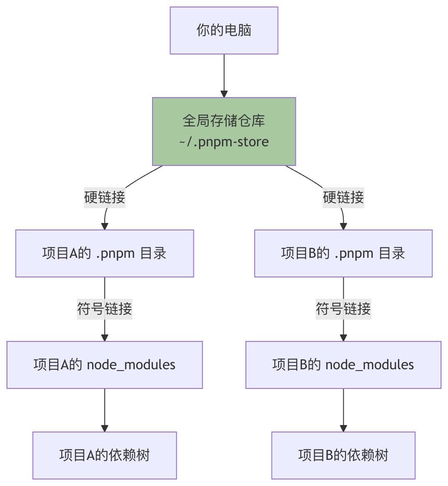

pnpm 使用紹介
Node.js 開発者なら、きっと聞いたことがあるでしょう
npmとyarn、それらはプロジェクトの依存関係を管理するための利器です。しかし、あなたはnode_modulesフォルダが非常に大きい、インストール速度が遅い、またはディスク容量がすぐにいっぱいになるという悩みに遭遇したことはありませんか？これこそ pnpm が解決できる問題です。
pnpmは、高速でディスク容量を節約する Node.js パッケージマネージャーです。コンテンツアドレッシング方式でパッケージを保存し、すべてのバージョンの依存関係をシステム内の1つの場所に集中して保存し、ハードリンクでプロジェクトにリンクするため、重複インストールを回避します。
pnpm のスローガンはFast, disk space efficient package manager（高速でディスク容量を節約するパッケージマネージャー）です。pnpm は速度が非常に速いだけでなく、独自のリンクメカニズムにより、大量のディスク容量と帯域幅を節約します。
pnpm をインストール
pnpm のインストール方法は複数あり、好みやシステム環境に応じて選択できます。
方法1：npm を使ってインストール（すべてのユーザーに推奨）
これは最も一般的で簡単な方法です。ターミナルを開き（Windows ユーザーは PowerShell または CMD を使用できます）、次のコマンドを実行します：
npm install -g pnpm
このコマンドは npm を通じて pnpm をグローバル環境にインストールします。
インストールが成功したかどうかを確認：インストールが完了したら、次のコマンドを実行してバージョンを確認します。バージョン番号が正常に表示されれば、インストールは成功です。
pnpm --version
出力例：8.15.0
方法2：スタンドアロンスクリプトでインストール
macOS または Linux ユーザーは、次のスクリプトでインストールできます：
# macOS/Linux curl -fsSL https://get.pnpm.io/install.sh | sh - # Windows (PowerShell) iwr https://get.pnpm.io/install.ps1 -useb | iex
pnpm の使用
インストール方法を学んだところで、実際に pnpm を使ってみましょう。そのコマンドは非常に直感的に設計されており、npm に慣れていれば、ほぼシームレスに移行できます。
新規プロジェクトの初期化
～に似てnpm init、pnpm はプロジェクトを初期化してpackage.jsonファイルを作成するために使用できます。
# 交互式地回答问题，创建 package.json pnpm init # 快速创建一个带有默认值的 package.json pnpm init -y
実行pnpm init -yすると、最も基本的なpackage.jsonファイルが得られます：
例
"name": "your-project-name",
"version": "1.0.0",
"description": "",
"main": "index.js",
"scripts": {
"test": "echo \"Error: no test specified\" && exit 1"
},
"keywords": [],
"author": "",
"license": "ISC"
}
依存パッケージのインストール
pnpm のインストールコマンドはpnpm add <package-name>、つまりnpm install <package-name>。
# 安装所有依赖 pnpm install # 添加依赖包 pnpm add <package-name> # 添加开发依赖 pnpm add -D <package-name> # 添加全局包 pnpm add -g <package-name> # 安装指定版本 pnpm add <package-name>@<version>
依存関係の更新
# 更新所有依赖 pnpm update # 更新指定包 pnpm update <package-name> # 更新到最新版本(忽略 package.json 中的版本范围) pnpm update --latest
依存関係の削除
pnpm remove <package-name>
スクリプトの実行
# 运行 package.json 中定义的脚本 pnpm run <script-name> # 一些常见的简写 pnpm start pnpm test pnpm build
npm から pnpm へのコマンド対照表
| npm コマンド | pnpm コマンド |
|---|---|
npm install |
pnpm install |
npm install <pkg> |
pnpm add <pkg> |
npm install <pkg> --save-dev |
pnpm add -D <pkg> |
npm install <pkg> --global |
pnpm add -g <pkg> |
npm update |
pnpm update |
npm uninstall <pkg> |
pnpm remove <pkg> |
npm run <script> |
pnpm run <script> |
npx <command> |
pnpm dlx <command> |
npm list |
pnpm list |
npm outdated |
pnpm outdated |
npm audit |
pnpm audit |
設定ファイル
pnpm は.npmrcファイルによる設定をサポートしています。
プロジェクトのルートディレクトリにこのファイルを作成すると、pnpm の動作をカスタマイズできます。
よく使う設定例
# 设置国内镜像源(淘宝) registry=https://registry.npmmirror.com # 自动安装 peer dependencies auto-install-peers=true # 严格模式 strict-peer-dependencies=true # shamefully-hoist(提升依赖,兼容某些工具) shamefully-hoist=true # 指定 node_modules 目录结构 node-linker=hoisted # 设置存储目录 store-dir=~/.pnpm-store
現在の設定を表示
pnpm config list
設定項目の設定：
pnpm config set <key> <value>
Workspace ワークスペース
pnpm は強力な monorepo サポートを内蔵しています。
プロジェクトのルートディレクトリに pnpm-workspace.yaml ファイルを作成することで、ワークスペースを定義します。
設定例：
packages: - 'packages/*' - 'apps/*' <p> - '!**/test/**'プロジェクト構造の例：
my-monorepo/
├── pnpm-workspace.yaml
├── package.json
├── packages/
│ ├── package-a/
│ │ └── package.json
│ └── package-b/
│ └── package.json
└── apps/
└── web-app/
└── package.json
ワークスペースコマンド
# 在所有工作区包中安装依赖 pnpm install # 在指定工作区执行命令 pnpm --filter <package-name> <command> # 在所有工作区执行命令 pnpm -r <command> # 递归运行脚本 pnpm -r run build # 为工作区添加依赖 pnpm --filter <package-name> add <dependency> # 添加工作区内部依赖 pnpm --filter package-a add package-b@workspace:*
ワークスペースプロトコル
ワークスペース内で他のパッケージを参照する場合は、workspace: プロトコルを使用します：
json{
"dependencies": {
"package-a": "workspace:*",
"package-b": "workspace:^1.0.0"
}
}高度な機能
pnpm exec と pnpm dlx
# 执行本地安装的包 pnpm exec <command> # 执行远程包(类似 npx) pnpm dlx create-react-app my-app # 使用特定版本 pnpm dlx create-react-app@latest my-app
依存ツリーの表示
# 查看依赖树 pnpm list # 指定深度 pnpm list --depth 2 # 只显示生产依赖 pnpm list --prod # 查看全局包 pnpm list -g
期限切れの依存関係の表示
pnpm outdated
依存関係のセキュリティ監査
pnpm audit # 自动修复安全问题 pnpm audit --fix
キャッシュのクリア
# 清理未使用的包 pnpm store prune # 查看存储位置 pnpm store path # 查看存储状态 pnpm store status
lockfile のインポート
他のパッケージマネージャーから移行する場合：
# 从 package-lock.json 导入 pnpm import # 从 yarn.lock 导入 pnpm import
パッチパッケージ
特定の依存パッケージを一時的に修正する必要がある場合：
# 创建补丁 pnpm patch <package-name>@<version> # 应用补丁后提交 pnpm patch-commit <path>
pnpm とは何か？中核となる利点は？
深く使い込む前に、まず pnpm の中核となる理念と、それがもたらす変革を理解する必要があります。
pnpm (Performant npm)は Node.js パッケージマネージャーであり、npm と後方互換性があります。つまり、大多数のnpmコマンドはpnpmの中で直接使用できます。
pnpm の設計目標は、従来のパッケージマネージャー（npm、yarn など）におけるディスク容量とインストール速度のボトルネックを解決することです。
従来のパッケージマネージャーの問題
想像してみてください。あなたが会社の10個の異なるフロントエンドプロジェクトに関わっており、各プロジェクトがlodash@4.17.21に依存しているとします。npm や yarn を使う場合、このlodashパッケージは完全にダウンロードされ、コンピュータの10個の異なるnode_modulesフォルダに10回保存されます。これは多大なディスク容量の無駄を引き起こします。
pnpm の革新的な方法：コンテンツアドレッシングストレージとハードリンク
pnpm は賢い方法を採用しています：
- グローバルストレージ：パッケージをインストールするとき、pnpm はその内容をグローバルな単一バージョンのリポジトリの中に保存します（通常は
~/.pnpm-store）。 - ハードリンク：あなたのプロジェクトの
node_modulesでは、pnpm はパッケージの完全なファイルをコピーせず、グローバルストレージ内のそれらのファイルを指すハードリンクを作成します。ハードリンクは「高度なショートカット」と考えることができ、元のファイルと同じディスクデータを共有します。 - シンボリックリンクの構成：保つために
node_modulesのフラットな構造を保つため（requireステートメントが機能しやすいように）、pnpm は精巧なシンボリックリンク（ソフトリンク）を作成して依存ツリーを構成します。
このメカニズムにより、どれだけ多くのプロジェクトが同じパッケージに依存していても、そのパッケージは物理ディスク上に1部だけ保存されます。これにより、すぐにわかる利点がもたらされます：
- 大量のディスク容量を節約複数のプロジェクトを持つ開発者にとって、節約効果は非常に顕著です。
- 非常に速いインストール速度：後のインストール時、パッケージがグローバルストレージに存在していれば、pnpm はリンクを作成するだけで、ダウンロードや解凍よりも数桁速くなります。
- セキュリティの向上：
node_modules内のパッケージファイルは読み取り専用です（ハードリンクのため）。これにより、プロジェクトスクリプトが依存パッケージの内容を誤って変更するリスクを回避し、依存関係の決定性を確保します。

上の図は pnpm の中核的なワークフローを明確に示しています：すべてのプロジェクトがハードリンクを通じてグローバルストレージ内の同じパッケージファイルを共有し、それぞれのnode_modules中でシンボリックリンクを通じて依存構造を構築します。
| 機能比較 | npm (v7+) / yarn | pnpm |
|---|---|---|
| ディスク容量の使用 | 各プロジェクトの依存関係が個別に保存され、占有容量が大きい。 | すべてのプロジェクトが依存関係の単一コピーを共有し、容量の占有が非常に低い。 |
| インストール速度 | 遅い。ダウンロード、解凍、依存ツリーの構築が必要。 | 非常に速い、特に後のインストールは主にリンク作成です。 |
node_modules構造 |
フラット化または半フラット化であり、依存関係の巻き上げやゴースト依存関係の問題を引き起こす可能性があります。 | 厳密な非フラット構造で、依存関係を正確にシミュレートし、ゴースト依存関係を排除します。 |
| Monorepo サポート | Workspaces でサポートされるが、パフォーマンスにボトルネックがある。 | ネイティブで効率的な Workspaces サポートを備え、パフォーマンスが強みです。 |
| パッケージ管理モデル | インストール時にファイルをプロジェクトにコピー。 | リンクモデル（ハードリンク + シンボリックリンク）。 |
| セキュリティ | 依存関係はプロジェクトスクリプトによって変更される可能性があります。 | 依存ファイルは読み取り専用のハードリンクであり、安全性が高い。 |
公式リソース：
その他の拡張機能